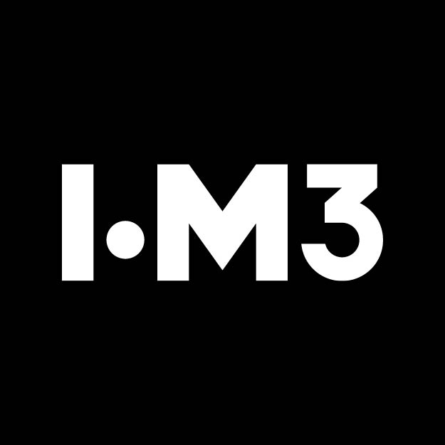

Ashane Fernando
"My mission in life is not merely to survive, but to thrive; and to do so with some passion, some compassion, some humour, and some style"
– Maya Angelou
About: I consider myself a student of life in three suits, i.e., Engineer, Researcher and Lecturer. Over the years, I have learned a great deal, yet I recognise there is always more to learn. I enjoy explaining and teaching concepts using mathematics, and I constantly seek a deeper understanding of challenging mathematics to improve my own knowledge.
Research: I have keen interests in exploring opportunities in minerals processing (understand and optimise processes), waste management (promote circular economy), image processing (theory and applications) and Chemical Engineering (reactions, fluids and thermodynamics). I pursue Artificial Intelligence/Machine Learning (AI/ML) very close to my heart (as an interested and keen learner) and eagerly wait to propose meaningful data-driven solutions to questions as my endeavour. I am always open to interesting ideas and I invite you to connect with me for fruitful discussions :).
-
Senior Lecturer 2020 – PresentDepartment of Nano Science TechnologyWayamba University of Sri Lanka
-
Visiting Research Fellow 2026 – PresentDepartment of Earth Science and EngineeringImperial College London
-
Postdoctoral Researcher 2026 – PresentSchool of EngineeringUniversity of the Newcastle, Australia
-
Visiting Lecturer 2022 – PresentPostgraduate Institute of ScienceUniversity of Peradeniya, Sri Lanka
-

Member (voluntary) 2023 – PresentScholarly Publications Committee (SPC)Institute of Materials, Minerals and Mining (IOM3), United Kingdom -
Visiting Lecturer 2025 – 2026Department of Biosystems EngineeringUniversity of Sri Jayawardenapura
-
Visiting Lecturer 2023 – 2025School of Computing | School of BusinessBenedict XVI Catholic Institute
-
 Visiting Lecturer 2020 – 2024Department of Mathematics | Department of Earth Resources EngineeringUniversity of Moratuwa
Visiting Lecturer 2020 – 2024Department of Mathematics | Department of Earth Resources EngineeringUniversity of Moratuwa